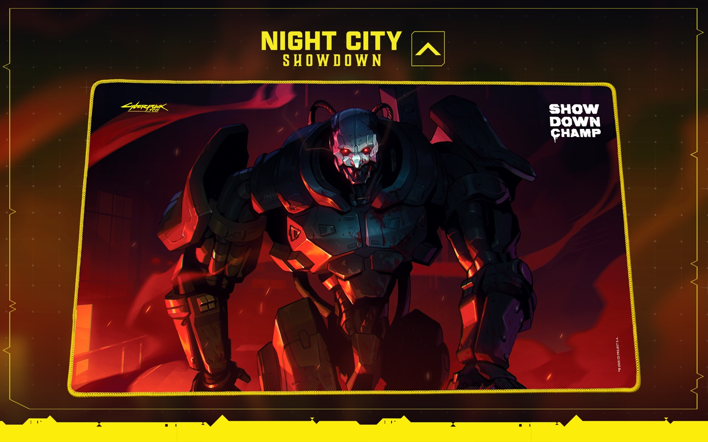
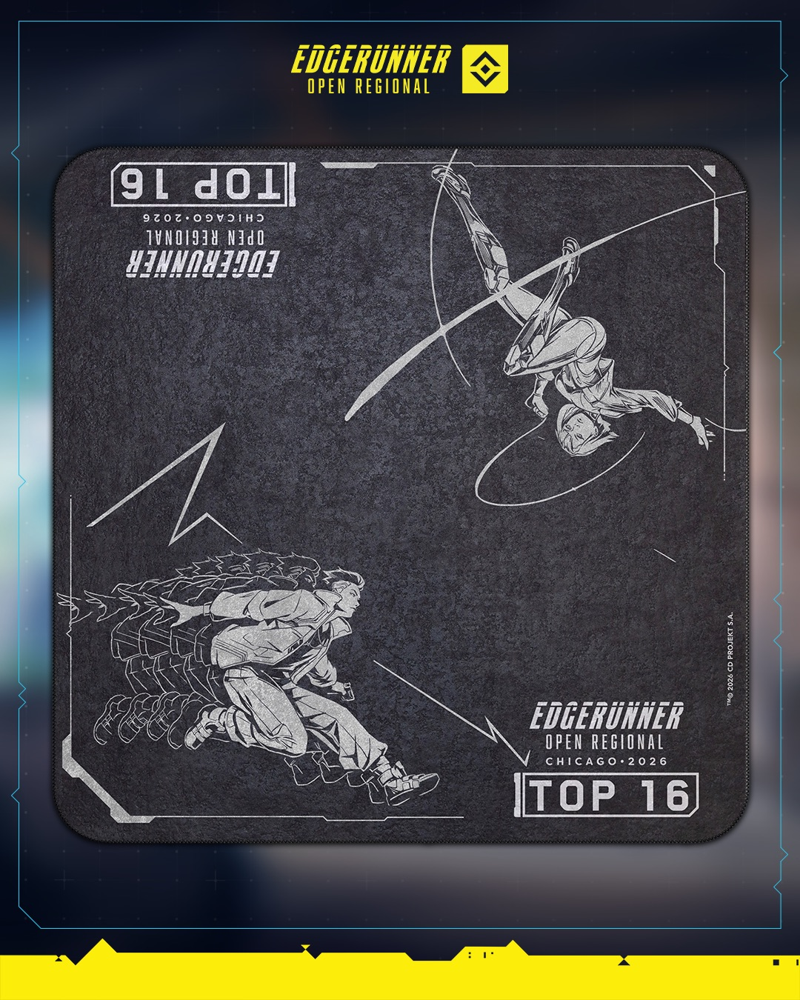
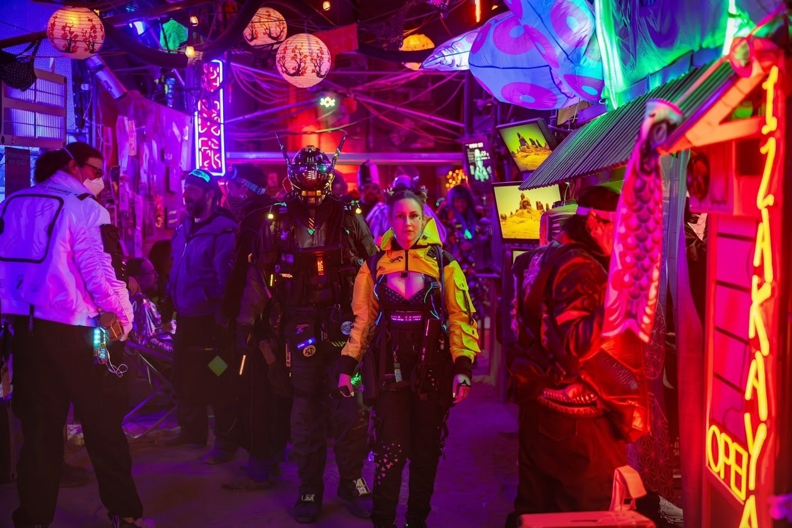

Our Upcoming Events
Cyberpunk TCG Night City Showdowns
Night City Showdowns are competetive tournaments that any approved Organized Play store can apply to host. At Night City Showdowns, players compete against local Rivals for some exclusive and highly sought-after prizing.

Edgerunner Open Regionals
Edgerunner Open Regionals (EORs) are our core large-scale competitive events. At EORs, thousands of players will battle it out for glory, extremely rare and unique prize cards, and qualifications to Black Sapphire Invitational Championship events.

Neotropolis
Neotropolis is a 5-day, 18+ immersive cyberpunk and science fiction desert festival created by the team behind Wasteland Weekend. Held in the Mojave Desert near California City and North Edwards, California, it blends live music, desert camping, interactive theater, and optional mission-based roleplay.

| Event | Cyberpunk TCG | Edgerunner Regionals | Neotropolis |
|---|---|---|---|
| Description | competitive tournament | competitive tournament | festival |
| Location | SGC Card Cafe | McCormick Place | Wasteland Valley |
| Date | November 30, 2026 | December 11-13, 2026 | April 27th-May 2nd, 2027 |
| Time | 8:30 PM | 4:00 PM | 9:00 AM - 10:00 PM |